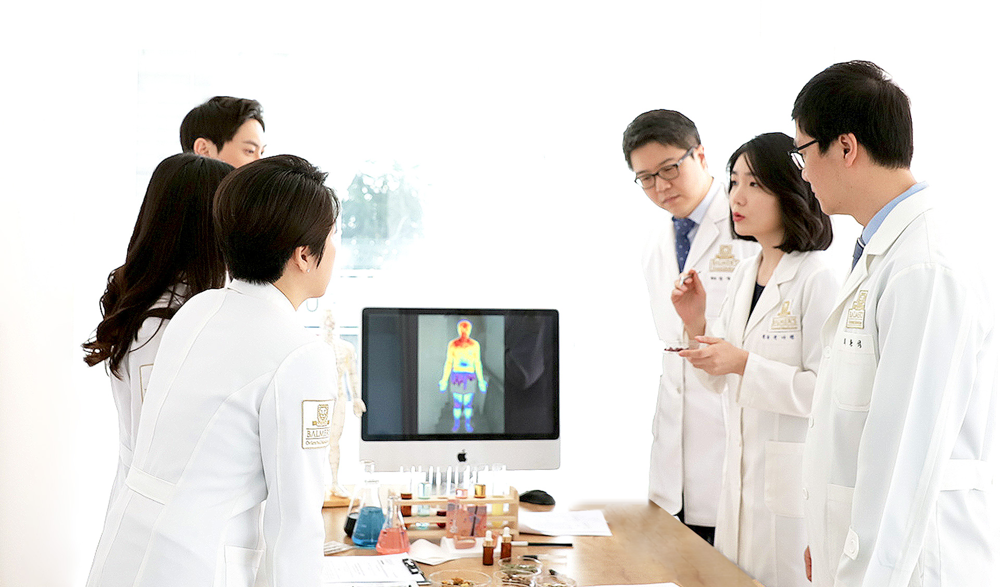

15년 이상, 전국 20개 지점, 누적 188만 건의 탈모 치료 경험.
발머스한의원의 건강한 탈모치료.

발머스한의원은 이런 고민을 가진 환자분들을 위해
2009년부터 오직 탈모 치료만을 연구하고 진료해왔습니다.
발머스한의원은 2009년 설립 이래 탈모 치료만을 전문으로 하는 한의원입니다. 다른 질환을 함께 진료하지 않습니다. 오직 탈모 하나에 집중합니다.
전국 20개 지점을 운영하는 탈모 전문 단일 브랜드로, 한 가지 질환에만 집중하면서 이 규모를 갖춘 한의원은 발머스한의원이 유일합니다.
사람은 백이면 백 다 다릅니다. 환자 개인의 체질, 생활 습관, 탈모 원인을 종합 분석하여 맞춤형 치료 프로그램을 설계합니다.
독자적인 한의학 진단 체계를 개발하여 저작권 등록하였습니다.
탈모의 원인을 체열 불균형의 관점에서 분석합니다.
두피에 열이 과도하게 몰려 모낭이 약해지는 상태입니다. 스트레스, 수면 부족, 과로 등이 체열 불균형을 유발하고, 두피열은 모공을 벌어지게 하며 모발의 생존 주기를 단축시킵니다.
상체는 열이 오르고 하체는 차가운 체질 불균형 상태입니다. "머리는 차고 배는 따뜻해야 건강하다"는 한의학 원리에 기반하여, 이 불균형을 교정하면 두피 환경이 개선됩니다.
스트레스로 인해 기(氣)의 순환이 막히는 상태입니다. 만성적인 스트레스는 기혈 순환 장애를 일으키고, 이것이 탈모로 이어지는 주요 원인 중 하나입니다.
체질과 원인에 따라 맞춤형 치료 프로그램을 설계합니다.
M자형, 정수리형 등 남성호르몬 영향의 탈모. 체열 불균형과 호르몬 조절을 통한 근본 치료.
전체적 숱 감소, 가르마 넓어짐. 여성 특유의 호르몬 변화와 체질을 고려한 섬세한 치료.
동전 크기의 원형 탈모반. 면역 안정과 부신 기능 강화를 통한 체계적인 치료.
두피 염증·각질·가려움 동반. 두피열 감소와 유수분 밸런스 회복.
환자 개인에게 최적화된 치료를 설계합니다.
고배율 두피 현미경으로 모공 상태, 피지량, 두피 온도, 모발 굵기를 분석합니다. 독자적 발모검사법(BHT)과 사진촬영법(BAP)을 활용합니다.
맥진, 문진, 설진 등 한의학 고유의 진단법으로 환자의 체질, 장부 기능, 순환 상태를 종합 분석합니다.
진단 결과를 바탕으로 치료 기간, 한약 처방, 침 치료 혈위, 약침 성분 등을 개인별로 결정합니다.
침 치료, 한약, 약침, 두피 관리를 복합적으로 적용합니다.

환자의 체질과 탈모 원인에 맞춰 개인별로 처방합니다. 순환 기능 회복과 부신 강화를 목표로 하며, 과항진된 장부 기능을 정상화하여 체열 불균형을 교정합니다.

경락을 다스려 인체 전반의 기혈 순환을 개선합니다. 신장 강화 혈자리, 기혈 순환 촉진 혈자리, 두피 열을 내리는 혈자리를 복합적으로 사용합니다.

정제된 한약 성분을 탈모 부위에 직접 주입합니다. 면역 반응을 안정시키고 두피의 열감을 완화하는 데 도움이 됩니다.

한방 외용제로 두피 환경을 개선합니다. MTS/미세침으로 유효 성분 침투를 높이고, 한방 원액 함유 전용 제품으로 일상 관리를 병행합니다.
상담부터 진료, 귀국 후 관리까지 체계적으로 지원합니다.
| 단계 | 내용 | 소요 시간 |
|---|---|---|
| 1. 온라인 상담 | 사전 문의 및 증상 상담 (이메일, 메신저를 통해 편하게 문의하세요) | 1~3일 |
| 2. 예약 확정 | 방문 일정 조율 및 방문 지점 안내 | 1일 |
| 3. 내원 진단 | 두피 검사 + 체질 분석 + 전문의 1:1 상담 | 약 60분 |
| 4. 치료 시작 | 맞춤 한약 처방 + 침 치료 + 두피 관리 | 약 40분/회 |
| 5. 경과 관리 | 귀국 후 원격 상담, 정기 검진, 치료 조정 (온라인 가능) | 지속 관리 |
영어, 중국어, 일본어 상담 가능. 사전 예약 시 통역을 준비해 드립니다.
귀국 후 온라인으로 경과 확인. 사진 기반 체크와 화상 상담을 제공합니다.
서울 강남점: 역삼역 도보 3분. 인천공항에서 약 60분 소요.
장기 치료 시 의료 비자(C-3-3) 발급 안내를 도와드립니다.
실제 환자의 치료 경과입니다.
 치료 전
치료 전
 치료 후
치료 후
 치료 전
치료 전
 치료 후
치료 후
 치료 전
치료 전
 치료 후
치료 후

발머스한의원은 탈모 치료에 대한 임상 경험과 연구 결과를 학술적으로 정리하여 출판해왔습니다.
「인체 대사와 탈모」 — 탈모의 근본 원인을 인체 대사의 관점에서 분석
「머리를 식히면 탈모는 낫는다」 — 두피열과 탈모의 관계, 27가지 생활 습관
「혁신적 탈모이론 열성탈모」 — 체열조절이상론에 기반한 새로운 탈모 치료 접근법
탈모 관련 학술 논문 10편 이상을 국내외 학회에 발표하였으며, 체열조절이상론, 발모검사법(BHT), 사진촬영법(BAP) 3건의 저작권을 등록하였습니다.
아래 채널로 편하게 문의해 주세요.
전문 상담사가 48시간 이내에 답변 드립니다.